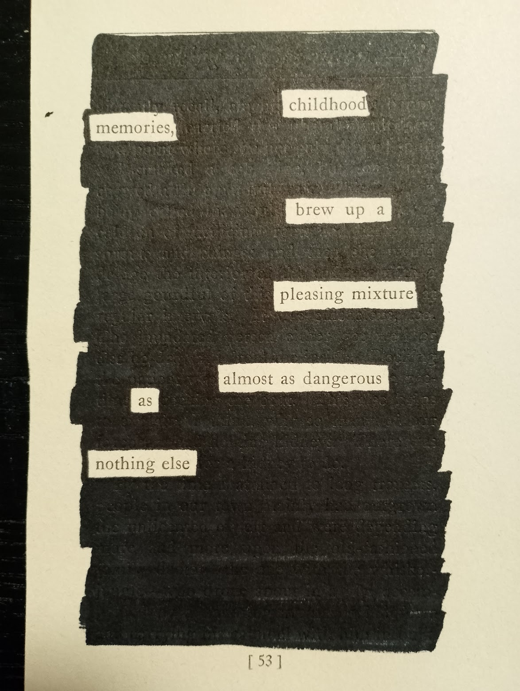
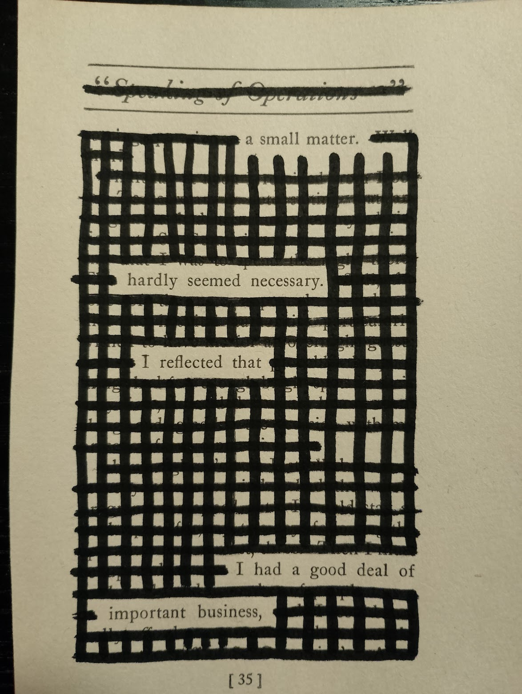
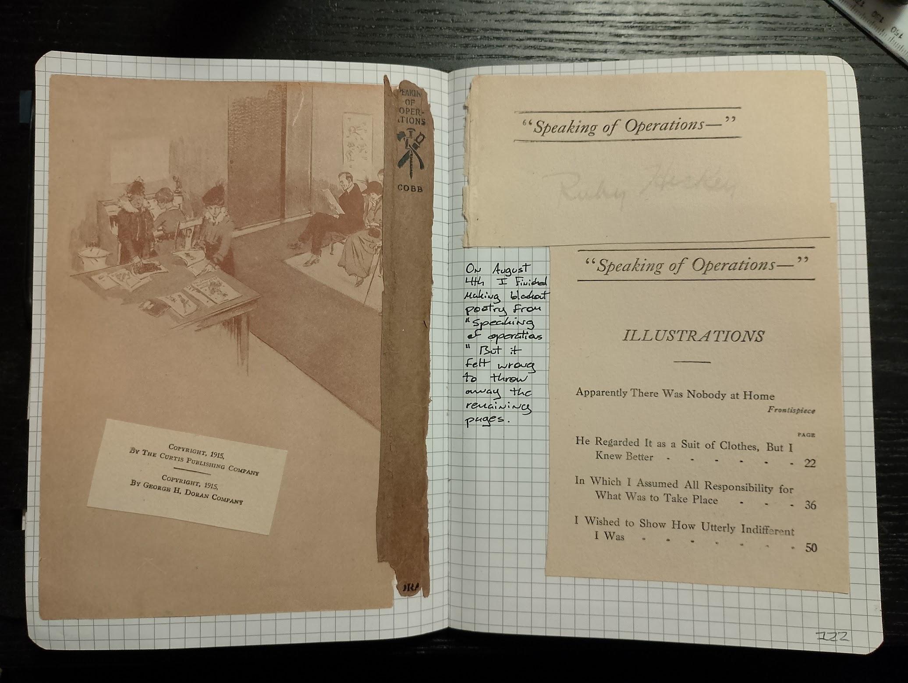
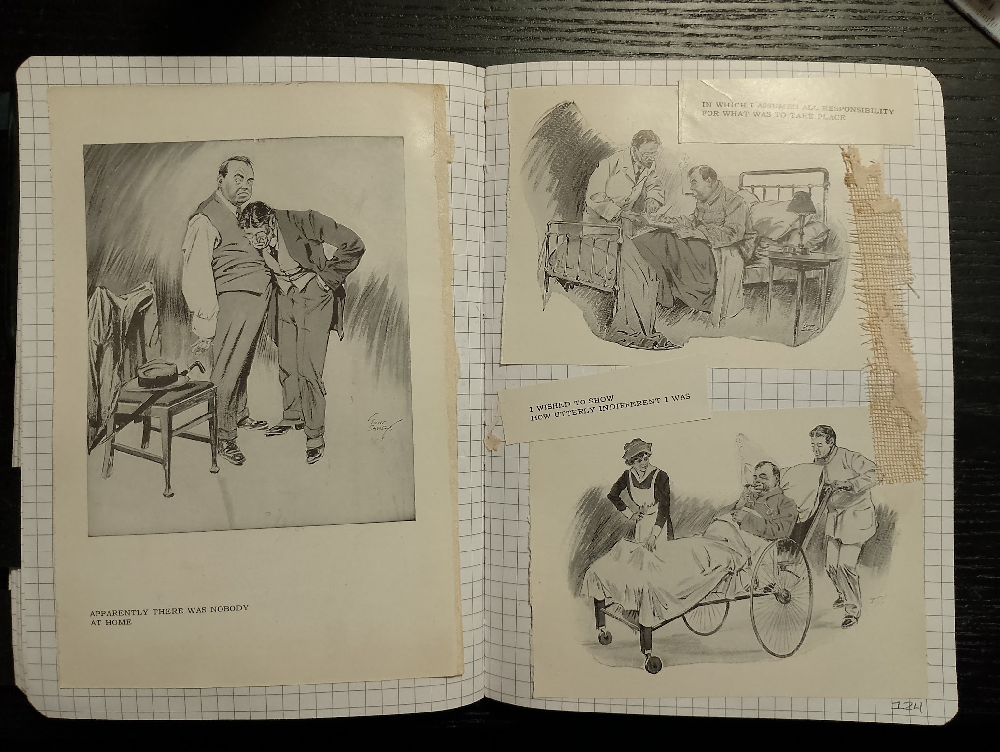

In June I went out to the thrift store and bought two books to get started with blackout poetry: shopping-for-books. 53 days later, and I have used every page in one of those two books to make poems. That book is of course "Speaking of Operations" by Irvin S. Cobb.
Here are three of my favourite poems from the pages of this 1915 comedy:



Once I was done with all the pages that had text, I still had a few illustration pages left in the book. Since this is a considerably old book (published in 1915) I decided to take the illustrations and the remaining pages and collage them inside my journal.

